Affine Image Transformation
code:
-
Transform and Interpolation
- transform.m - transforms the given images using the specified affine transformation and interpolation. It can transform to the same size as the original image, or to an image large enough to hold the transformed data.
- resample_nearest.m - resamples an image at the specified point by finding the "nearest neighbor".
- resample_linear.m - resamples an image at the specified point with bi-linear interpolation. Affine transformation matrices
- makeTranslate.m - creates a translation matrix.
- makeRotate.m - creates a rotation matrix.
- makeScale.m - creates a scaling matrix.
- makeShear.m - creates a shearing matrix.
I've created a transform function that takes an image, affine transformation matrix, interpolation type flag, and a flag to indicate whether to use the same size as the original image, or to use the projected image size. It then returns the image transformed using the specified parameters.
The transform function makes use of the resample_nearest and resample_linear functions, each of which takes the image and an index (floating point), and returns the nearest neighbor or linearly interpolated value, respectively.
To facilitate performing various affine transformations I've put together several functions to create the appropriate affine transformation matrix. The functions are makeTranslate, makeRotate, makeScale, and makeShear. Each takes the appropriate parameters and returns a populated matrix. The different matrices can be multiplied together to chain together a series of affine transformations, for example "translate + rotate + translate".
examples:
- Below are examples of different affine transformations
- Face images are from the Extended Yale B Data Set (http://vision.ucsd.edu/~leekc/ExtYaleDatabase/ExtYaleB.html)
 Original | 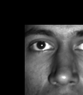 translation by (50,50), nearest neighbor |
translation by (50,50), linear interpolation | |
| The above example shows a translation by (50,50), as you can see the image has been shifted by 50 pixels in the x and y directions. Both nearest and linear interpolations are shown. Note that we fill space outside the original image's domain with 0, which displays black. | |
Rotated 45 degrees with nearest neighbor | 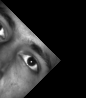 Rotated 45 degrees with linear interpolation |
Same but resized to include all resampled data. | 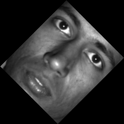 Same but resized to include all resampled data. |
zoomed in nearest neighbor | 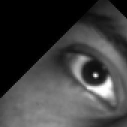 zoomed linear interpolation |
| Rotation is demonstrated here. Here we rotate by 45 degrees. The frist two images show the result when the resampled image is the same size as the original, resulting in the transformed data going outside the image bounds. The second two images show the result when the resampled image is resized to capture all the sampled data. If you look closely at the large images you can see a difference between nearest neighbor and linear interpolation, we also show a zoomed in version emphasizing the improved sampling obtained with linear interpolation. | |
| 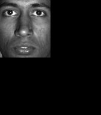 Scaled image by (0.5,0.5) using nearest neighbor |  Scaled image by (0.5,0.5) using linear interpolation |
| Above scaling is shown. Again, because we (optionally) force the result to have the same dimensions as the original, we can see the effect of scaling from the black area that lies outside the original image domain. | |
Shear by (0,0.5) using nearest neighbor | 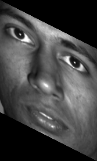 Shear by (0,0.5) using linear interpolation. |
| Here we show a shear transformation by (0,0.5). We've changed the output image to be large enough for the entire output, to show the full effect of the shear. While we haven't zoomed in, this transformation also has noticeable different between nearest neighbor and linear interpolation, for example look around the eye lids. | |
 Combined affine transform using nearest neighbor | 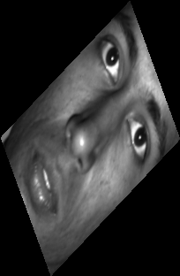 Combined affine transformation using linear interpolation. |
|
For this example we combine Translation, Rotation, and Shear to produce an affine transformation.
The transformation matrix ends up looking like this: 0.8119 0.9397 8.5822 -0.7687 0.3420 -114.0426 0 0 1 Making use of all 6 DOF's with an affine transformation. | |
Transform from landmarks
code:
- transform.m - same as before.
- resample_nearest.m - same as before.
- resample_linear.m - same as before.
- get_points.m - displays both images, and allows the user to select correspondence points, and saves them to a file.
- show_points.m - displays both images, and the specified correspondence points plotted on top. Useful to comparing correspondence points and resulting warped image.
- affine_from_points.m - finds the affine transformation matrix for the specified correspondence points. This will solve the problem for the exact solution case, and the over-constrained case.
I've reused the transform and resampling functions from above, and introduce 3 new functions for this section.
The first two are for a very bare-bones way of gathering correspondence points in matlab. The get_points() method will display both images, and allow the user to select the correspondence points. The show_points() method will display the images with those points on top - which is useful for comparing the result of the image warp.
The third new piece is the crux of this section - affine_from_points() calculates the affine transformation matrix that satisfies the correspondence points.
A note on usage: previous functions expected image matrices, the get_ and show_ functions take the files names - this seemed an appropriate interface for saving out the correspondence points to a file. But it can potentially be confusing if you expect to pass in the image matrix, instead of the filename.
examples:
| 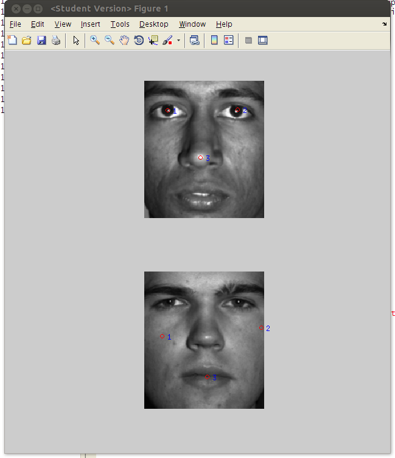 Correspondence points | 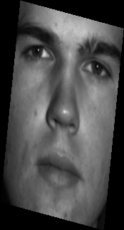 Result of the affine transformation. |
|
This example shows the 3 correspondence points in a screenshot of the "show_points()" display. As you can see the two points towards the top of the first image correspond to two points on the cheeks of the second image, and the third point on the nose of the first image corresponds to the point on the lips of the second. The result is show on the right, as you can see the is slightly sheared or rotated and stretched out to match the the points in the original image. This example demonstrates some of the transformations that are possible with an affine correspondence. With no warping available the image doesn't deform at all, but it definitely stretches and rotates to try to match the points as best it can with the limited degrees of freedom. | |
| 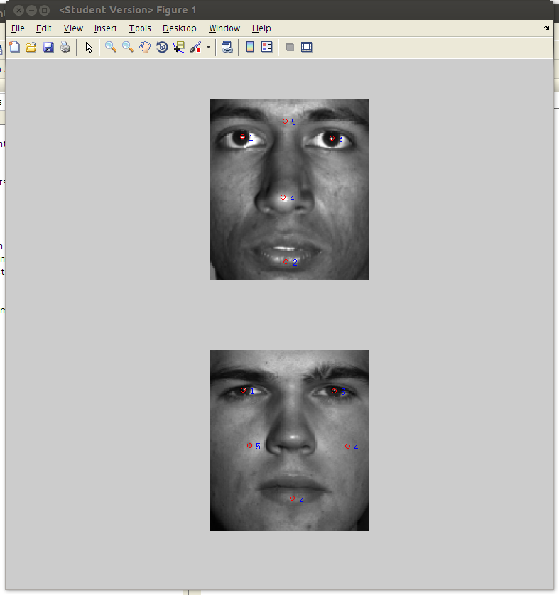 Correspondence points | 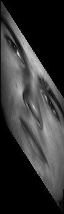 Resulting affine transformation. |
|
This example shows the 5 correspondence points in a screenshot of the "show_points()" display. The points are mostly matched in location, except point 4 - which moves from the nose the right cheek, and point 5 that moves from the nasion to the left cheek. The two offset points seem to be enough weight to move the result into the skewed form that is shown. The transformation is trying to match the forehead/nasion point to the check while also trying to match the nose with the other cheek. This results in some skew and stretching. Again this example illustrates the limits of an affine transformation, and how the localized warping can handle these kind of constraints in a more visually appealing way - especially for face images. | |
Nonlinear warping using radial basis functions
code:
- transform_local.m - transforms the given images using the specified local transformation parameters.
- gaussian_kernel.m - evaluate the kernel value given sigma, current correspondence point, and the local point.
- resample_nearest.m - same as above.
- resample_linear.m - same as above. Affine transformation matrices
- local_from_points.m - determines the proper local changes given the correspondence points and sigma.
Here we use a slightly modified version of transform() called transform_local() - which instead of applying an affine transformation over the whole image, applies the local warps according to the kernel, sigma, and correspondence points.
To make sure the local warping vectors are set correctly, we've defined a local_from_points() method that takes the correspondence points and calculates the proper warping vectors, as described in the Durrleman paper. Those points and warping vectors are then passed to transform_local() to perform the actual transform.
Linear and nearest neighbor interpolation are again available.
examples:
| 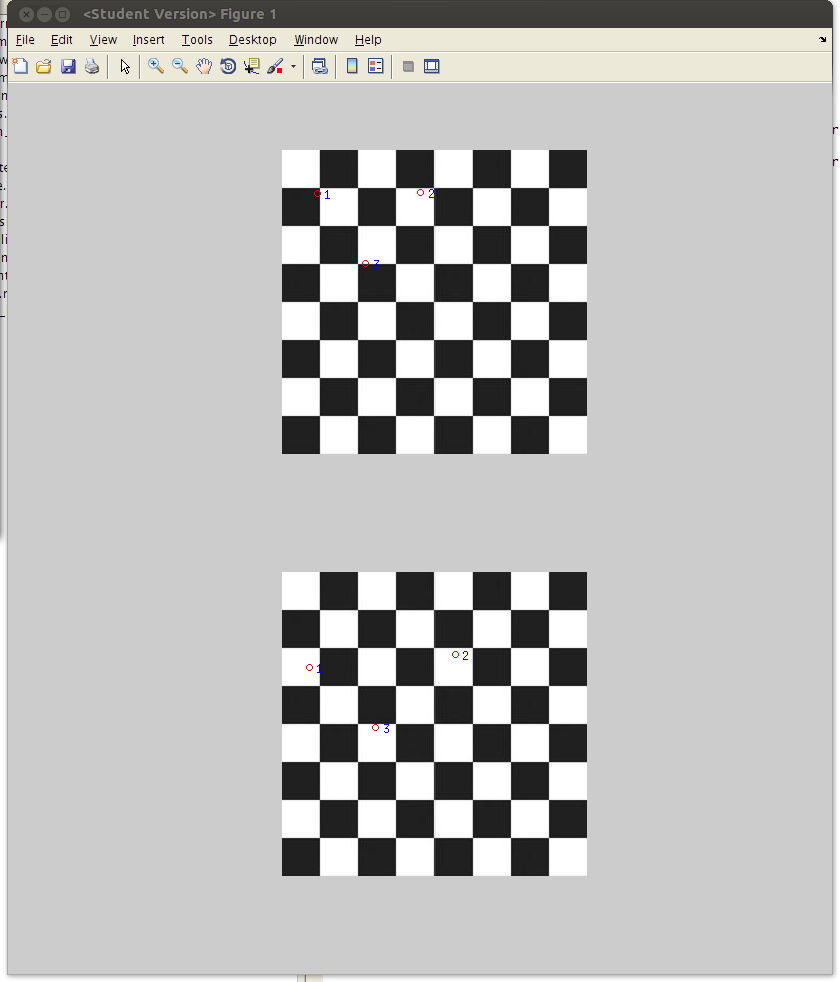 3 correspondence points | 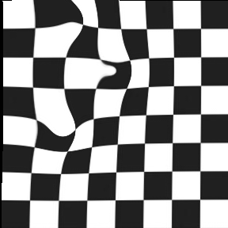 Resulting warped image with sigma=20. |
| 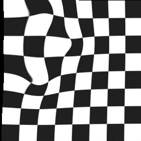 Resulting warped image with sigma=30 | 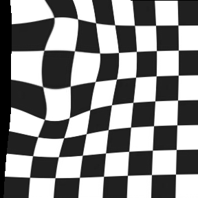 Resulting warped image with sigma=50 |
|
Here we show some examples of local non-linear image warping, using radial basis functions. For this example we use the provided checker board image to make it easy to see the deformations. The first image shows the 3 correspondence points. The next three images show the result of warping the images using those correspondence points with different sigmas. It's interesting in this case the warping becomes more smoothing the the higher sigmas. I think the best looking image is the sigma=50, where teh deformations seem to blend into each other. | |
| 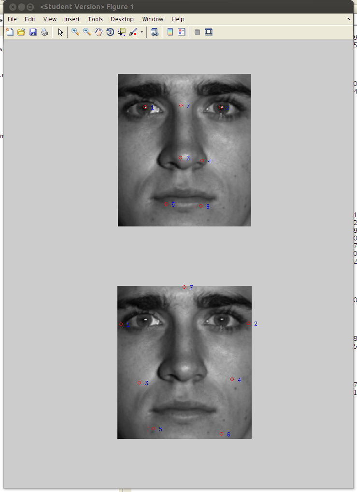 7 correspondence points | 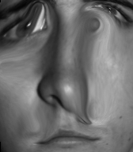 Resulting warped image with sigma=20 |
| 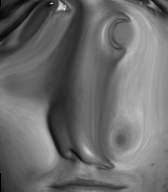 Same with sigma=30 | 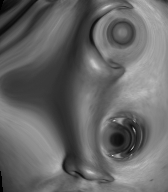 Same with sigma=50 |
|
We have some fun with the last example, using another face image. The 7 correspondence points are shown in the first image. The last three images show the warping at different values of sigma, with the final image being an example of modern art. It is interesting to note how the more correspondence/warping points in the image, the stronger the effect of the warping (which is plainly depicted in this example). | |